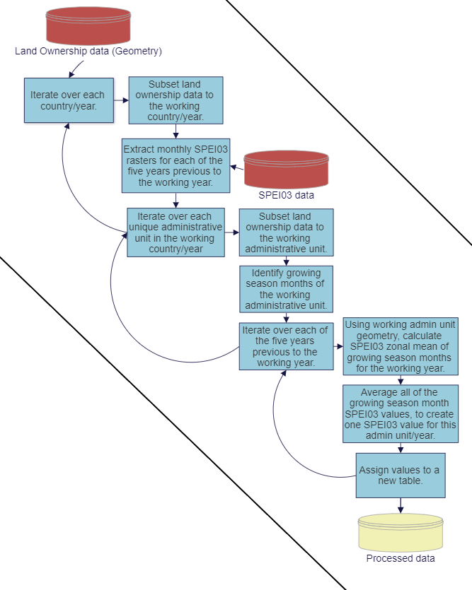

The Impacts of Landlessness
The adverse effects of climate change are likely to harm food supplies and agricultural livelihoods worldwide. Faced with challenges resulting from increasingly unpredictable weather patterns, some farmers might be forced abandon their occupation. A dramatic increase in landless population could result in increased levels of social and political conflict. After analyzing agriculture and precipitation data from a large number of countries worldwide, we found that drier than average growing season weather is associated with declining landownership rates. For every consecutive dry growing season before a land ownership survey, the agricultural land ownership rate of the affected reigon falls by 2.51%. This article is an attempt to describe the process behind that analysis.
The Data
Any model is only as good as the data it uses. For this project, we there were several key variables we needed to know. These are as follows:
- A large, multi-year, multi-country sample of land-ownership data, hopefully at a sub-national resolution.
- An exogenous way to measure environmental stress during the growing season, anywhere in the world.
The first requirement was resolved quite nicely, thanks to the Demographic and Health Survey (DHS). The DHS is a data collection program administered in many countries around the world, with most questions interested in healthcare access and outcomes. Lucky for us, some of the surveys included a question regarding land ownership. Also, these surveys are statistically representative at a sub-national resolution, and can be accessed for free as a shapefile through a user-friendly geospatial data portal. Perfect! Well, almost perfect. The survey is not offered in every country, or every year, so there is a lot of temporal and spatial variety that we need to control for.

The second requirement was quite a bit more challenging to put together. We decided to use a standardized precipitation index, or SPEI, to measure environmental stress. Using SPEI allows for easy comparison between countries at different times and places because it is recorded as a standard deviation above or below the mean for that location. SPEI is calculated using varying temporal windows, generally in terms of months. The most basic form of SPEI would probably be the 12-month SPEI, or SPEI12. A SPEI12 for any given location at any given time would tell how the year of precipitation previous to that given time compared to all other years in the dataset, recorded as a standard deviation above or below the mean. A negative value would imply a dry year, while a positive value would imply a wet year. Simple, right? Not quite. There are several complicating factors. The first issue is that if we look only at environmental stress during the year of a DHS survey, we don’t learn anything because the economic effects of that growing season might not be felt until later years. Instead, we want to look at the years preceding a survey. The number of years we look at is arbitrary, but we settled on five. This also allows us to see what happens when multiple years of drought occur within our five-year windows.
The second issue is that if we used a SPEI12, we would be capturing an entire years-worth of weather events, and we are only interested in weather events occurring during or near the growing season for each unit. So instead of a 12-month SPEI, we can use a 3-month SPEI or SPEI3. Now, for any given date, we can compare the previous three months of precipitation to those same three months in the rest of the dataset. But the growing season can vary dramatically both between and within countries. So, we need to know each administrative unit's growing season months. This might sound tricky, but lucky for us, that dataset already exists! Anomaly Hotspots of Agricultural Production, or ASAP, is a dataset commissioned by the European Union Joint Research Center to help warn of agricultural anomalies worldwide. They provide phenological growing season data as part of that dataset. So, we took that phenological growing season data (provided as a raster) and used zonal statistics to find the mean start and end months for each of our administrative units.
Now that we had everything we needed, it was time for data processing. For each administrative unit (during any given year), we completed the following process to find the mean growing season SPEI03 for each of the five years previous to that administrative unit's survey year. (The actual R code for this process can be viewed on my GitHub page.)
- We identify the five years previous to the working unit’s survey year.
- We identify and extract the SPEI03 data corresponding to the growing season months of each of those five years.
- For each year, we convert those months of data into rasters and calculate a zonal mean of each using the geometry of the administrative unit.
- We average each of those values together to calculate one SPEI03 value for that year.
Once this process was complete, we were ready to model. We just had to determine how we would like to operationalize these values. We settled on three operationalizations, each a distinct independent variable.
- SPEI03 < -.05 (The number of the five years previous to the survey year with SPEI03 less than -0.5)
- SPEI03 < -1 (The number of the five years previous to the survey year with SPEI03 less than -1)
- We average each of those values together to calculate one SPEI03 value for that year.

The Model
The goal of our analysis is to create three models, predicting the rate of landownership of administrative unit (i) in country (k) during year (j) using our three operationalized SPEI03 variables, listed above. The first two models (SPEI03<-0.5 and SPEI03<-1) will show us how repeated years of below average precipitation affect landownership, while the third (Mean SPEI03) will tell us how the general trend of precipitation in that timeframe will affect landownership.